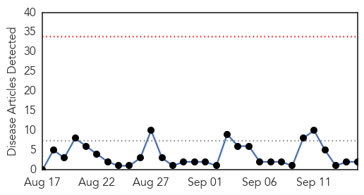
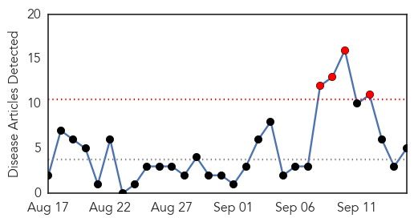

Chikungunya
30-Day Web Trend
0 alerts, 0 warnings

30-Day Twitter Trend
0 alerts, 0 warnings
Article Locations
Article Confidences

Top Articles:
Top Tweets:
-
No tweets found for Sep 15, 2014
Influenza
30-Day Web Trend
4 alerts, 0 warnings

30-Day Twitter Trend
1 alerts, 0 warnings

Article Locations

Article Confidences

Top Articles:
- 0.995
- Actor James Van Der Beek and AstraZeneca Join Forces to Educate Families about Influenza
- 0.991
- NYC: ‘No confirmed cases’ of enterovirus D-68 in Brooklyn
- 0.831
- A Little Spent on Flu Prevention Now Can Avert Lots of Costs in Lost Productivity Later
- 0.674
- Is the influenza vaccine safe for cystic fibrosis patients?
- 0.615
- Knox Co. Health Department offers flu vaccinations for schools
Top Tweets:
- 0.523
- There are now over 50,000 cases of influenza in Australia. This is the highest number of cases since 2009. http://t.co/GwUdPrDRzj